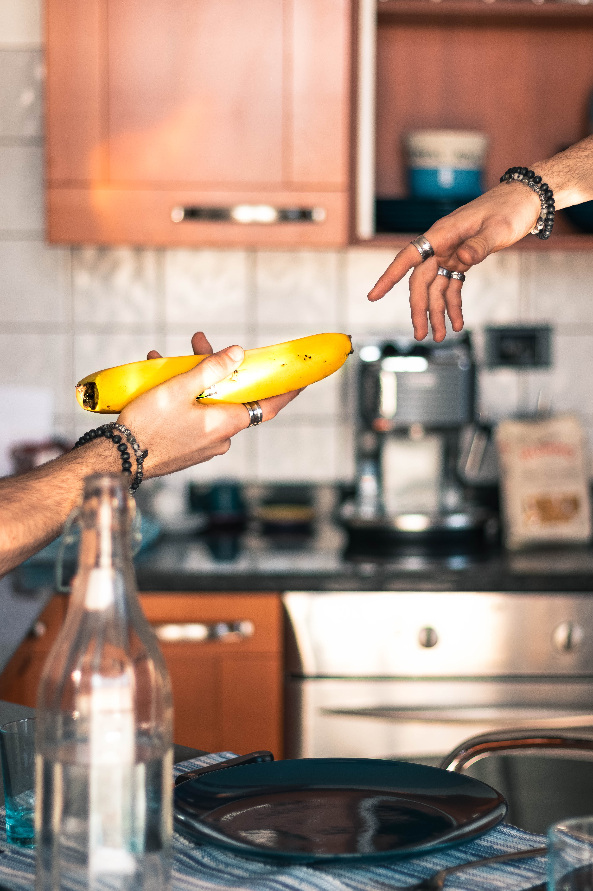
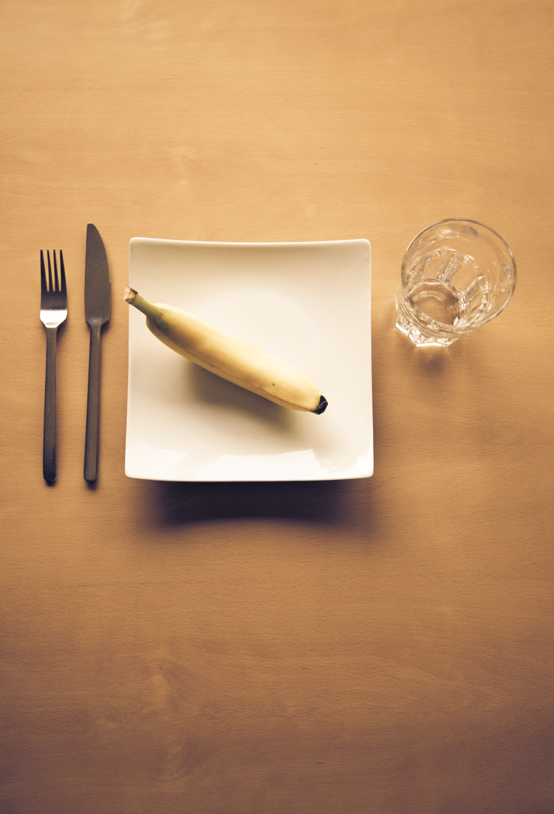

Here are the many uses of the bananas!
 Their peel can be used as a stylish hat! Colorful and fashionable!
Their peel can be used as a stylish hat! Colorful and fashionable!

This recreation of The Creation of Adam is even better than the original.
 Look how happy is this monkey! Only thanks to its banana!
Look how happy is this monkey! Only thanks to its banana!

Still a better plating than most 3⭐️ Michelin restaurants.